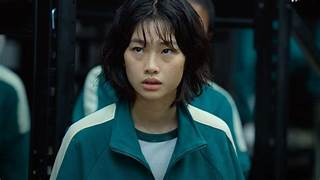
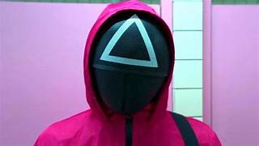
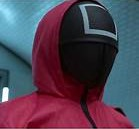
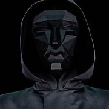
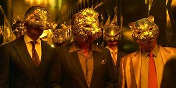
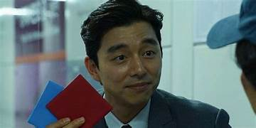
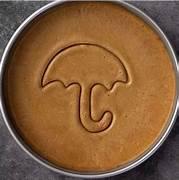
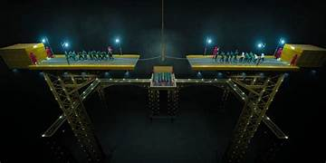
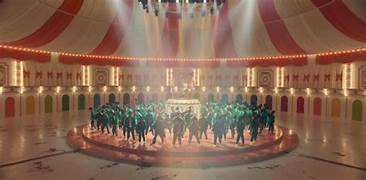

Los jugadores arriesgan su vida para ganar una cantidad enorme de dinero
Los circulos no pueden hablar y se encargan de las tareas mas generales como: limpiar las salas de juego, agarrar a los muertos y cremarlos, Etc

Los triangulos hacen poco pero son importantes: tienen armas como metralletas y matan jugadores
Los cuadrados son los gerentes. Llevan una simple pistola de mano
Es el protagonista con el numero 456, debe muchos millones a una mini-mafia

El Frontman dirige los juegos
Le sirven a los VIP haciendo cosas como servir bebidas o comidas a los VIP

Estas mujeres se quedan quietas y ya
*No estan desnudas como se ve en la imagen solo tienen body paint

Los VIP son millonarios o billonarios que van a divertirse viendo y apostando en lo juegos en vivo
El reclutador recluta a los jugadores(o los mata) haciendolos jugar juegos
Mientras la luz esta en rojo no te debes mover o si no te eliminan, en luz verde si

Tienes que cortar la figura dentro de la galleta, si la cortas mal te eliminan
Tienes que jalar la cuerda para tirar al otro equipo
En un puente con 2 cristales uno se rompe y te tira al vacio y el otro te resiste

Los ultimos 2 jugadores juegan a lucha libre

El pentathlon se juega con todos con las piernas atadas se divide en varios juegos en los que si pierdes no te mueres, solo si se acaba el tiempo:

Los VIP dan un numero y los jugadores al acabar la musica, corren a las puertas a formar equipos del numero indicado
Seong Gi-hun (el protagonista de *Squid Game*) buscó la isla donde se llevaban a cabo los juegos porque quería detener la organización, no unirse a ella. Si bien al final de la serie tenía el dinero suficiente para vivir como un VIP, su moral y su trauma por lo que vivió en los juegos le impidieron simplemente ignorarlo. Además, los VIP eran personas extremadamente ricas y despiadadas que disfrutaban viendo a la gente morir por entretenimiento. Aunque Gi-hun tenía dinero, no encajaba con su perfil, y la organización probablemente no lo habría aceptado fácilmente como VIP. En cambio, él eligió buscar justicia y enfrentarse al sistema que destruyó tantas vidas.
probablemente se hicieron VIPs porque ya eran personas extremadamente ricas, desconectadas de la realidad y con una moral corrupta. Aquí hay algunas razones por las que pudieron haber aceptado unirse a la élite de los juegos:
Aburrimiento y poder – Cuando tienes tanto dinero que puedes comprar cualquier cosa, algunas personas buscan formas extremas de entretenimiento. Los VIPs en la serie parecían disfrutar la violencia y la desesperación de los participantes como si fuera un deporte.
Falta de empatía – Para ellos, los jugadores no eran personas, sino simples piezas en un juego. Estaban tan acostumbrados a su riqueza y privilegio que dejaron de ver a los demás como seres humanos.
Corrupción absoluta – El dinero y el poder absoluto pueden llevar a las personas a cometer actos inhumanos sin remordimiento. Para los VIPs, esto era solo otro pasatiempo exclusivo.
Conexiones con la organización – Es probable que algunos VIPs fueran reclutados por otros miembros de la élite o tuvieran contactos con la gente detrás de los juegos, lo que les permitió acceder a este tipo de entretenimiento secreto.
1. Síndrome de Estocolmo y Adaptación al Sistema Después de pasar por un trauma extremo en los juegos, algunos ganadores pudieron haberse convencido de que la única forma de sobrevivir en un mundo tan cruel era estar del lado de los poderosos. En lugar de ver a la organización como enemiga, la aceptaron y se convirtieron en parte de ella.
2. Adicción al poder, el entretenimiento y a apostar Ganar los juegos les habría dado acceso a una cantidad de dinero y poder impensable. Algunos pudieron haberse sentido atraídos por la idea de ver a otros sufrir, como ellos lo hicieron, pero desde una posición segura y privilegiada.
3. Falta de propósito después de ganar El trauma de sobrevivir podría haber dejado a algunos ganadores sin rumbo en la vida. Convertirse en VIP les daría una nueva identidad y un propósito, incluso si era perverso.